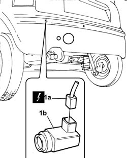
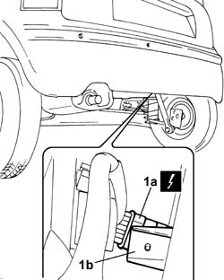
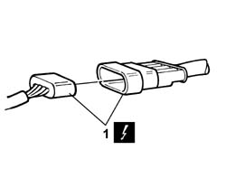

5580H06 wiring of parking sensor system r r
- Path
- Procedures > 55 ELECTRICAL EQUIPMENT > 5580 SPECIAL ACCESSORIES > 5580H parking obstacle detection device > 5580H06 wiring of parking sensor system r r
- Kind
- repair procedure (removal / refitting; the operation number is the code)
- Applies to
- all engines; all production periods
- Interactive page
- https://sloeber94.github.io/elrnDB-fPnd/en/#/2753019
Applies to: all engines; all production periods
 Removing
Removing
 Refitting
RefittingDisconnect the battery negative terminal.
Place the car on a lift.
1. Disconnect the electrical connections (1a) for the parking sensors (1b).
 | Name | Connector |
|---|---|---|
1a | Parking sensor unit | K97A |
| Name | Connector |
|---|---|---|
1a | Parking sensor unit | K97B |
| Name | Connector |
|---|---|---|
1a | Parking sensor unit | K97C |
| Name | Connector |
|---|---|---|
1a | Parking sensor unit | K97D |

Applies to: all engines; all production periods
1. Release the coupling for the parking sensor wiring (1a) from the mounting bracket (1b).

Applies to: all engines; all production periods
1. Disconnect the electrical coupling between the rear wiring and the parking sensor wiring.
| Name | Connector |
|---|---|---|
1 | Join for parking sensor | D89 |

Applies to: all engines; all production periods
Release the electrical wiring for the parking sensors from the retaining clips and remove it from its housing.
Applies to: all engines; all production periods
Refitting
RemovingCheck the condition of the electrical wiring.
If necessary, carry out any continuity checks.
If the wiring is damaged, proceed with replacing it.
Fit the electrical wiring in place, securing it to the retaining clips.
Connect the electrical coupling between the rear wiring and the parking sensor wiring.
| Name | Connector |
|---|---|---|
- | Join for parking sensor | D89 |
Fit the coupling for the parking sensor wiring to the mounting bracket.
Connect the electrical connections for the parking sensors.
| Name | Connector |
|---|---|---|
- | Parking sensor unit | K97A |
| Name | Connector |
|---|---|---|
- | Parking sensor unit | K97B |
| Name | Connector |
|---|---|---|
- | Parking sensor unit | K97C |
| Name | Connector |
|---|---|---|
- | Parking sensor unit | K97D |
Connect the battery negative terminal.
Remove the vehicle from the lift.